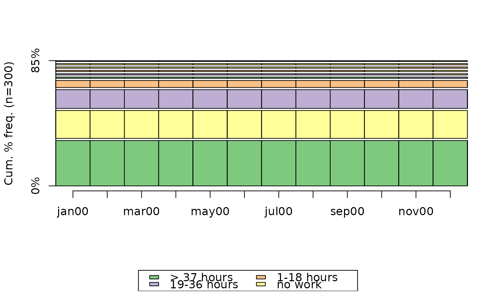
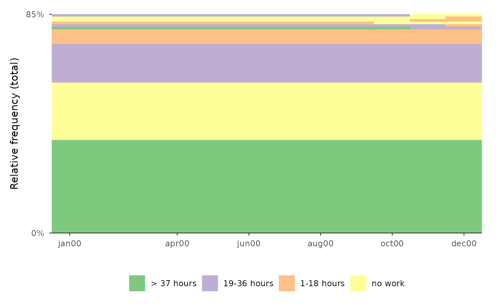
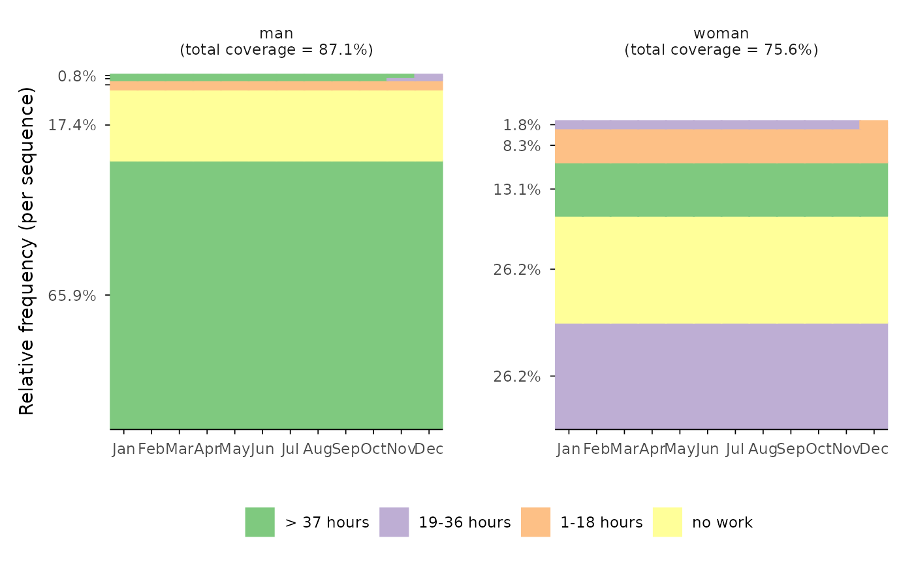

Function for rendering sequence index plot of the most frequent sequences of
a state sequence object using ggplot2 wickham2016ggseqplot
instead of base R's plot function that is used by
TraMineR::seqplot /
TraMineR::plot.stslist.freq gabadinho2011ggseqplot.
Usage
ggseqfplot(
seqdata,
group = NULL,
ranks = 1:10,
weighted = TRUE,
border = FALSE,
proportional = TRUE,
ylabs = "total",
no.coverage = FALSE,
facet_ncol = NULL,
facet_nrow = NULL
)Arguments
- seqdata
State sequence object (class
stslist) created with theTraMineR::seqdeffunction.- group
A vector of the same length as the sequence data indicating group membership. When not NULL, a distinct plot is generated for each level of group.
- ranks
specifies which of the most frequent sequences should be plotted; default is the first ten (
1:10); if set to 0 all sequences are displayed- weighted
Controls if weights (specified in
TraMineR::seqdef) should be used. Default isTRUE, i.e. if available weights are used- border
if
TRUEbars are plotted with black outline; default isFALSE(also acceptsNULL)- proportional
if
TRUE(default), the sequence heights are displayed proportional to their frequencies- ylabs
defines appearance of y-axis labels; default (
"total") only labels min and max (i.e. cumulative relative frequency); if"share"labels indicate relative frequency of each displayed sequence (note: overlapping labels are removed)- no.coverage
specifies if information on total coverage is shown as caption or as part of the group/facet label if
ylabs == "share"(default isTRUE)- facet_ncol
Number of columns in faceted (i.e. grouped) plot
- facet_nrow
Number of rows in faceted (i.e. grouped) plot
Value
A sequence frequency plot created by using ggplot2.
If stored as object the resulting list object (of class gg and ggplot) also
contains the data used for rendering the plot.
Details
The subset of displayed sequences is obtained by an internal call of
TraMineR::seqtab. The extracted sequences are plotted
by a call of ggseqiplot which uses
ggplot2::geom_rect to render the sequences. The data
and specifications used for rendering the plot can be obtained by storing the
plot as an object. The appearance of the plot can be adjusted just like with
every other ggplot (e.g., by changing the theme or the scale using + and
the respective functions).
Experienced ggplot2 users might notice the customized labeling of the
y-axes in the faceted plots (i.e. plots with specified group argument). This has
been achieved by utilizing the very helpful ggh4x library.
Examples
# Use example data from TraMineR: actcal data set
data(actcal)
# We use only a sample of 300 cases
set.seed(1)
actcal <- actcal[sample(nrow(actcal), 300), ]
actcal.lab <- c("> 37 hours", "19-36 hours", "1-18 hours", "no work")
actcal.seq <- seqdef(actcal, 13:24, labels = actcal.lab)
#> [>] 4 distinct states appear in the data:
#> 1 = A
#> 2 = B
#> 3 = C
#> 4 = D
#> [>] state coding:
#> [alphabet] [label] [long label]
#> 1 A A > 37 hours
#> 2 B B 19-36 hours
#> 3 C C 1-18 hours
#> 4 D D no work
#> [>] 300 sequences in the data set
#> [>] min/max sequence length: 12/12
# sequence frequency plot
# with TraMineR::seqplot
seqfplot(actcal.seq)

# with ggseqplot
ggseqfplot(actcal.seq)

# with ggseqplot applying additional arguments and some layout changes
ggseqfplot(actcal.seq,
group = actcal$sex,
ranks = 1:5,
ylabs = "share") +
scale_x_discrete(breaks = 1:12,
labels = month.abb,
expand = expansion(add = c(0.2, 0)))
#> Scale for x is already present.
#> Adding another scale for x, which will replace the existing scale.
